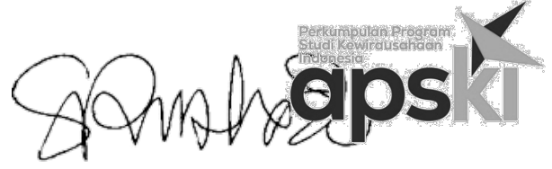

Perkumpulan Program Studi Kewirausahaan Indonesia
Gelora Creative Braga Jl. Braga No.109, KotaBandung
Provinsi JawaBarat 40111
https://apski.net/
admin@apski.net
SURAT EDARAN
IURAN ANGGOTA APSKI TAHUN 2025
No. 002/PIN.16/XI/2025
Sehubungan dengan berakhirnya tahun kalender 2024 dan dalam rangka menjaga kelangsungan serta perkembangan organisasi, dengan ini dengan hormat diberitahukan kepada seluruh anggota maupun calon anggota untuk dapat melakukan pembayaran iuran tahunan anggta dengan rincian iuran sebagai berikut:
- Anggota Inti (Institusi Prodi Kewirausahaan ie. Ex Officio Kaprodi) : Rp 500.000
- Anggota Luar Biasa (individual pemangku kepentingan di bidang kewirausahaan; individu dosen, peneliti, mitra industri): Rp 200.000 per individu
Pembayaran dapat dilaksanakan melalui transfer bank ke Rekening berikut ini:
Bank : BNI
Kantor Cabang : Perguruan Tinggi Bandung
No. Rekening : 1812250463
Nama Pemegang Rekening : Perkumpulan Program Studi Kewirausahaan Indonesia
Setelah melakukan pembayaran, dimohon untuk dapat mengkonfirmasi dengan mencantumkan pada bukti pembayaran melalui tautan https://bit.ly/IuranAPSKI2025
Terima kasih atas Kerjasama dan perhatian yang diberikan
Bandung, 15 Januari 2025
Ketua Umum APSKI

-->
Sonny Rustiadi, SE., MBA., PhD., CBAP